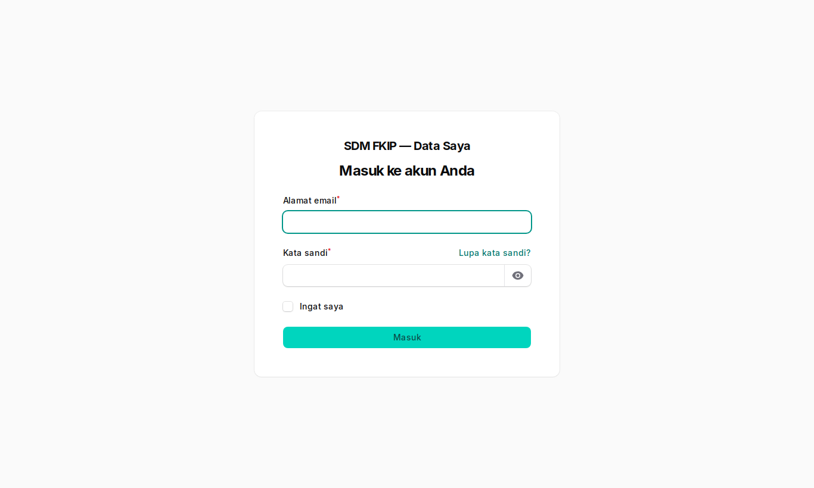
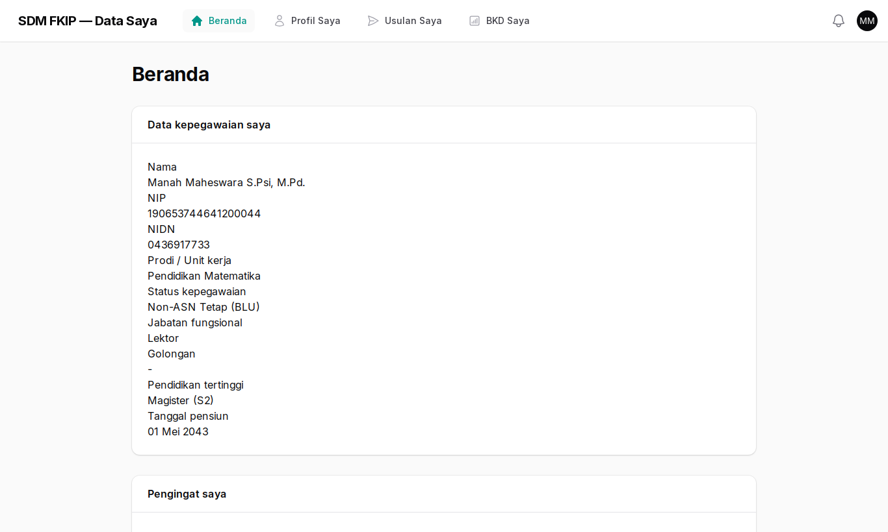
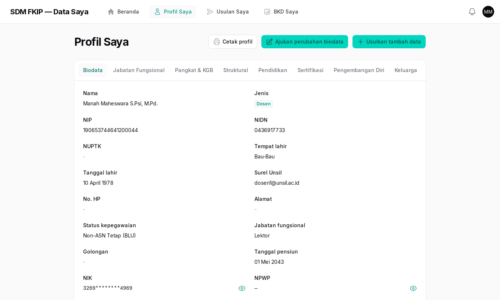
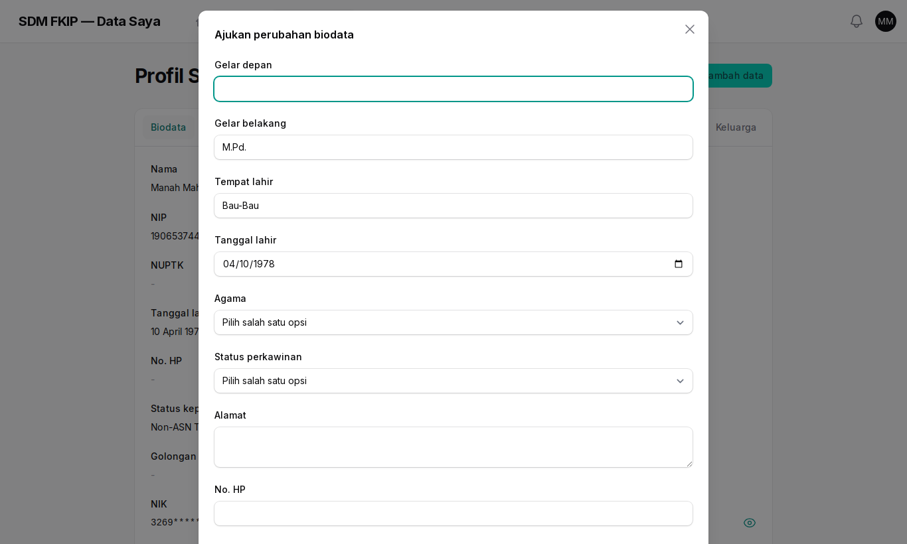
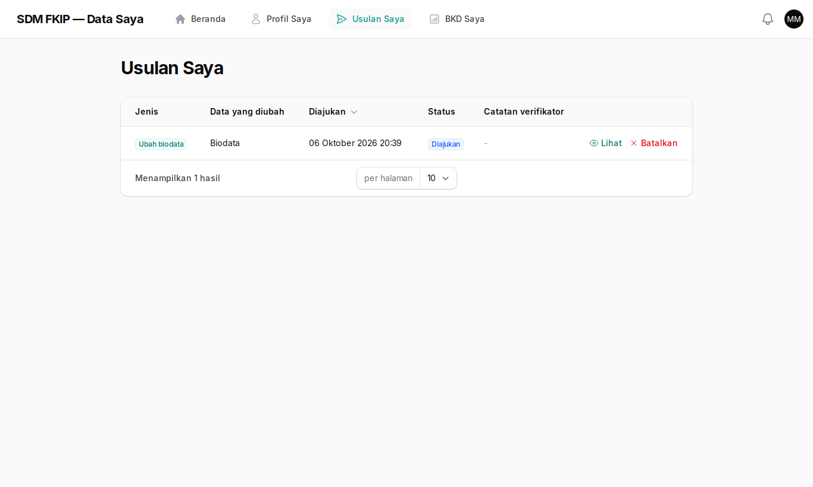
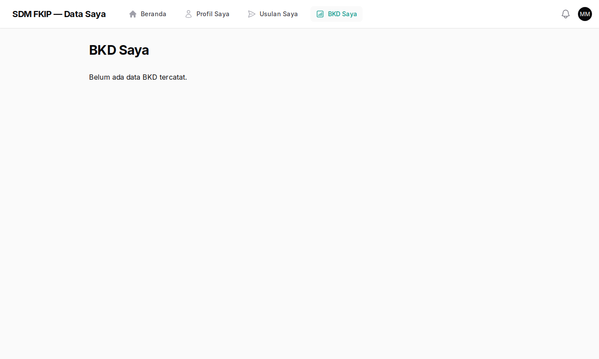

Panduan Dosen & Tenaga Kependidikan
Swalayan /saya: lihat data Anda dan ajukan perubahan untuk diverifikasi admin.
1. Aktivasi dan masuk
- Buka tautan di surel aktivasi dan buat kata sandi.
- Masuk di
/sayadengan surel Unsil. - Baca dan setujui Pemberitahuan Privasi (wajib; muncul lagi bila versinya diperbarui).

2. Beranda
Ringkasan profil, pengingat tenggat Anda, dan status usulan terakhir.

3. Profil Saya
Seluruh biodata dan riwayat Anda. NIK/NPWP/rekening bertopeng; ikon mata menampilkannya (tercatat). Tombol Cetak profil menghasilkan PDF tanpa data sensitif.

4. Mengajukan perubahan
- Pada Profil Saya tekan Ajukan perubahan biodata (atau Tambah data untuk riwayat).
- Ubah nilai yang perlu dan isi alasan.
- Untuk NIK, NPWP, rekening, ijazah, dan riwayat penting, tempel tautan bukti Google Drive (akses terbatas) lalu centang konfirmasi.
- Pilih Kirim (atau simpan sebagai draf). Data Anda berubah hanya setelah admin menyetujui.

5. Memantau usulan dan BKD


Tanya jawab
Lupa kata sandi?
Di halaman masuk pilih "Lupa kata sandi" dan ikuti surel. Bila gagal, hubungi admin kepegawaian.
Usulan saya dikembalikan.
Buka Usulan Saya, baca catatan verifikator, perbaiki, lalu kirim ulang. Usulan yang ditolak tidak mengubah data; ajukan ulang dengan bukti yang benar.
Data BKD belum muncul.
BKD diimpor admin per semester dari SISTER. Pastikan NIDN Anda benar, lalu minta admin mengimpor ulang.
Tautan berkas ditolak.
Gunakan tautan satu berkas berawalan https dari Google Drive/Docs atau unsil.ac.id, bukan folder atau pemendek URL, dengan akses berbagi terbatas.